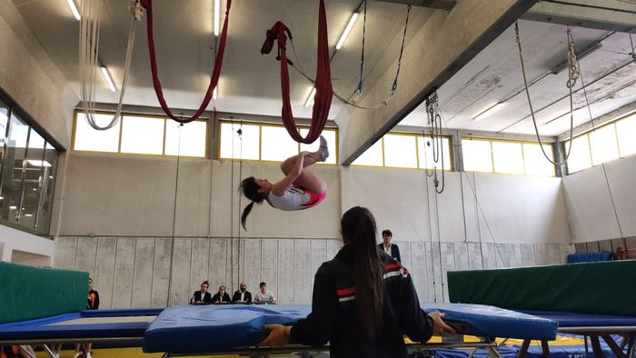
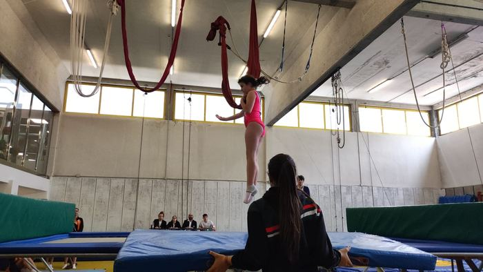
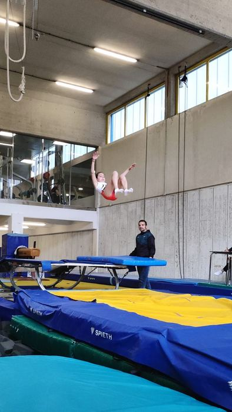
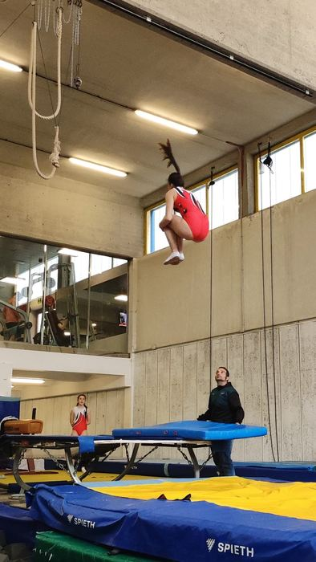
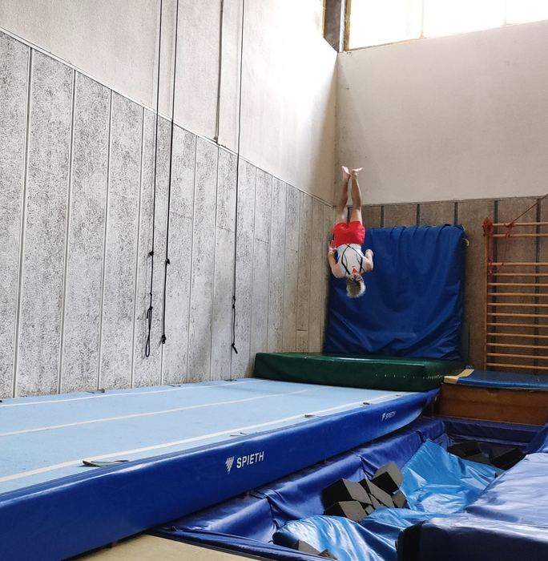

Mikel Mardones
Trampolineko Munduko Txapelketa, Baku 2021.
Prentsan: El Desmarque Deia Berria
Txapelketak
Denboraldi bakoitzean autonomia eta estatu mailan lehiatzen gara. Gimnasta gazteenekin, helburua lehen Espainiako Txapelketara ondo prestatuta iristea da.
2023-24 eta 2024-25 denboraldietako lehiaketak:
2024-25 denboraldian, gure gimnasta gazteenek arrakastaz osatu zituzten beren pasaldiak lehen lehiaketa-esperientzian, eta klubeko zenbait gimnasta jarraipen-programetan sartu ziren.
Lorpenak
Trampolineko Munduko Txapelketa, Baku 2021.
Prentsan: El Desmarque Deia Berria
Espainiako Gimnasia Federazioak Adin Taldeen Munduko Txapelketarako hautatua. Espainiako txapeldunordea eta 2023ko Bizkaiko Kirolari Promesa.
Prentsan: Deia Radio Popular
Espainiako Gimnasia Federazioak 2021eko Adin Taldeen trampolineko Munduko Txapelketarako deitua.
2023ko maiatzeko lehiaketa.




